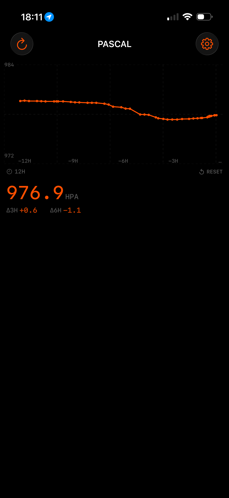
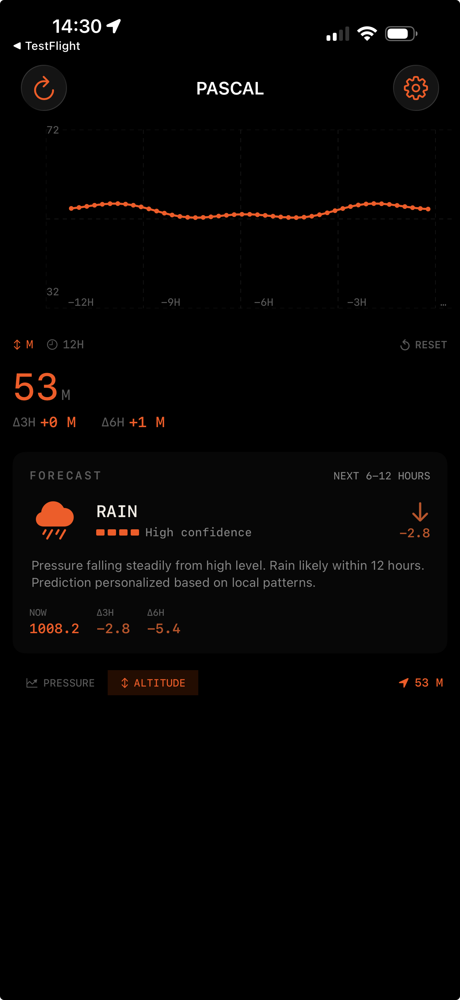

PRESSURE TREND
ALTITUDE MODEKnow when weather is coming before it arrives. Pascal turns your iPhone's barometer into a personal weather station that detects pressure fronts in real-time.
Perfect for migraines, outdoor planning, or just understanding why you feel "off" today. The challenge? Walking upstairs creates the same pressure shift as a storm front. Pascal's hybrid calibration system filters out your movement to reveal the true weather signal.
No internet required. Pascal uses the Zambretti Forecaster—a 110-year-old meteorological algorithm still trusted by professionals—combined with on-device ML that learns your local patterns.
| RAPID DROP | Storm likely within 6-12 hours |
| STEADY FALL | Rain approaching |
| RISING | Clear weather building |
After ~25 predictions, Pascal becomes personalized to your exact location. Coastal, mountain, or city—the ML model learns what pressure patterns mean where you live.
Interactive pressure charts with 3h/6h delta indicators. See exactly how fast pressure is changing.
Converts to sea-level pressure for accurate forecasting. Compare with official weather stations.
Track elevation changes in real-time. Perfect for hiking, cycling, or elevator spotting.
Background sampling every 15-30 minutes. Zero battery impact—your trend is always ready.
Home screen widgets in multiple sizes. Glance at pressure, trend, and forecast instantly.
Stairs, elevators, and driving automatically filtered. Only true weather changes shown.
Layer 1: Movement compensation filters stairs, elevators, and driving using barometer's relative altitude.
Layer 2: GPS converts to sea-level pressure so you can compare with weather stations.
| SENSOR | Bosch BMP280 (±1 hPa accuracy) |
| RESOLUTION | 1.5 cm altitude equivalent |
| STORM THRESHOLD | 6+ hPa drop in 3 hours |
| HISTORY | 48 hours rolling |